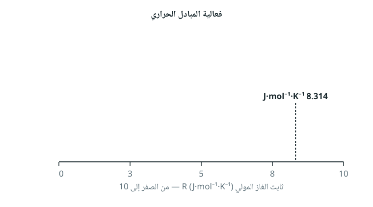

فعالية المبادل الحراري
Heat exchanger effectiveness
فعالية المبادل الحراري نسبة الحرارة المنقولة فعلاً إلى أقصى حرارة ممكنة، وتُختصر بالرمز ε. تتراوح بين صفر وواحد، وتُستعمل حين لا تُعرف درجات حرارة الخروج.
فعالية المبادل الحراري، ورمزها ε، هي نسبة معدل انتقال الحرارة الفعلي في المبادل إلى أقصى معدل انتقال ممكن نظرياً بين التيارين. وأقصى انتقال ممكن يحدث في مبادل عكسي الجريان لا نهائي المساحة، ويُحسب بحاصل ضرب أصغر سعة حرارية للتيارين في فرق درجة حرارة الدخول بينهما. والسعة الحرارية للتيار هي حاصل ضرب معدل التدفق الكتلي في الحرارة النوعية، والتيار ذو السعة الأصغر هو الذي يحدّ الانتقال. وتُستعمل الفعالية حين لا تُعرف درجات حرارة الخروج، أو حين يُراد تقييم مبادل قائم بلا معرفة تفصيلية لمساحته ومعامل انتقاله. وترتبط الفعالية بعدد وحدات النقل NTU ونسبة السعات الحرارية، ولكل نوع مبادل علاقته الخاصة. مثال: مبادل فعالية 0.75 بين تيارين سعتاهما 2 kW/K و3 kW/K وفرق دخول 100 K ينقل 0.75 × 2 × 100 = 150 kW.
كيف تعمل الظاهرة؟
المبادل الحراري ينقل الحرارة بين تيارين عبر جدار فاصل. ومقدار الحرارة المنقولة يحدّه عاملان: مساحة الانتقال ومعامل انتقالها، وأكبر فرق حراري متاح بين التيارين. وحين تكون المساحة كبيرة بلا حد، يقترب التيار ذو السعة الأصغر من درجة دخول التيار الآخر، ولا يمكن تجاوزها لأن ذلك يخالف القانون الثاني. ولهذا فالفعالية تقيس كم أُنجز من هذا الحد الأعلى. والتيار ذو السعة الأصغر هو الذي يحدّ الأداء، لأنه يتغير أكثر لكل وحدة حرارة منقولة. ولهذا تُبنى الفعالية على C_min لا على C_max.
العلاقة بالأرقام
ε = q/q_max. وq_max = C_min·(T_h,in − T_c,in). وC = ṁ·c_p بوحدة W/K. وq = ε·C_min·ΔT_in. وNTU = U·A/C_min. وللمبادل العكسي: ε = [1 − exp(−NTU(1−C_r))]/[1 − C_r·exp(−NTU(1−C_r))] حيث C_r = C_min/C_max. مثال: C_min = 2 kW/K، ΔT_in = 100 K، ε = 0.75: q = 150 kW. ولو كانت C_r = 0.667 وNTU = 3 لكانت ε نحو 0.84.
مفاهيم متقاربة
الفعالية نسبة إلى أقصى نظري، والكفاءة نسبة إلى مدخل متاح، والاثنتان لا تُخلطان. والفعالية ليست U: U خاصية موضعية، والفعالية نتيجة كلية. والفعالية ليست LMTD: LMTD طريقة حساب بديلة تحتاج درجات خروج معروفة، والفعالية تُستعمل حين لا تُعرف. والفعالية ليست نسبة تدفق كتلي ولا نسبة مساحة. والفعالية لا تتجاوز الواحد، وأي قيمة فوق الواحد خطأ حسابي.
حدود التطبيق
الفعالية لا تُستعمل حين تُعرف درجات الخروج، فحينها LMTD أدق. ولا تُقارن فعاليات مبادلات مختلفة النوع بلا تصحيح، لأن العلاقة بين ε وNTU تختلف بين التدفق المتوازي والعكسي والمتقاطع. وفي المبادلات ذات تغيّر الطور لا تبقى السعة الحرارية ثابتة، فتُستعمل صيغ خاصة. وفي المبادلات المتسخة تنخفض الفعالية مع الزمن، فلا تُعمَّم قيمة تصميمية على تشغيل طويل. والفعالية لا تصف توزيع الحرارة داخل المبادل.

| الكمية | القيمة | المصدر |
|---|---|---|
| إنثالبي تبخير الماء عند 100 °م | 2256.4 kJ/kg | [2] |
المصادر
- 1 The International System of Units (SI), 9th edition (2019) — BIPM — Bureau International des Poids et Mesures (2019). www.bipm.org/en/publications/si-brochure · اطُّلع عليه 2026-11-21
- 2 NISTIR 5078: Thermodynamic Properties of Water — Tabulation from the IAPWS Formulation 1995 — NIST — National Institute of Standards and Technology (1998). nvlpubs.nist.gov/nistpubs/Legacy/IR/nistir5078.pdf · اطُّلع عليه 2026-11-21
- 3 CODATA Value: Stefan-Boltzmann constant — NIST — CODATA 2022 recommended values (2024). physics.nist.gov/cgi-bin/cuu/Value?sigma · اطُّلع عليه 2026-11-21
استشهد بهذا المصطلح
الصيغتان مبنيتان من بيانات الصفحة نفسها: العنوان والتاريخ ورابط النسخة المنشورة.
فعالية المبادل الحراري — Heat exchanger effectiveness. (2026). ديوان المعرفة — انفراد. https://infiradev.com/diwan/terms/term-heat-exchanger-effectiveness.html
@misc{term-heat-exchanger-effectiveness2026,
title = {فعالية المبادل الحراري},
titleaddon = {Heat exchanger effectiveness},
howpublished = {{ديوان المعرفة — انفراد} — مرجع علمي عربي},
year = {2026},
url = {https://infiradev.com/diwan/terms/term-heat-exchanger-effectiveness.html},
urldate = {2026-11-26},
note = {مراجعة علمية: hermes (مراجعة معتمدة 2026-11-26)}
}
راجعه: hermes (مراجعة معتمدة 2026-11-26) · 2026-11-26 · آخر تحديث 2026-11-21